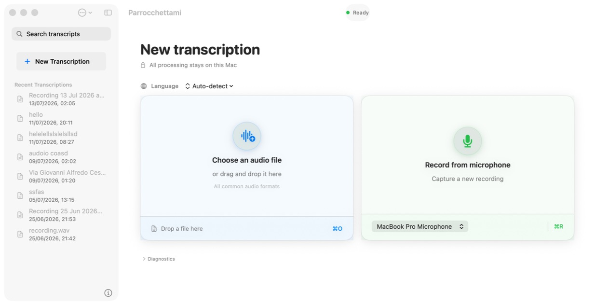
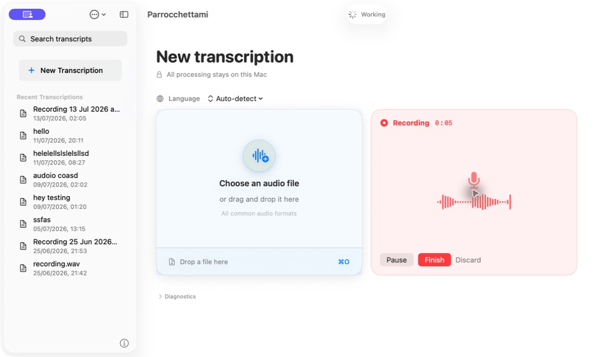
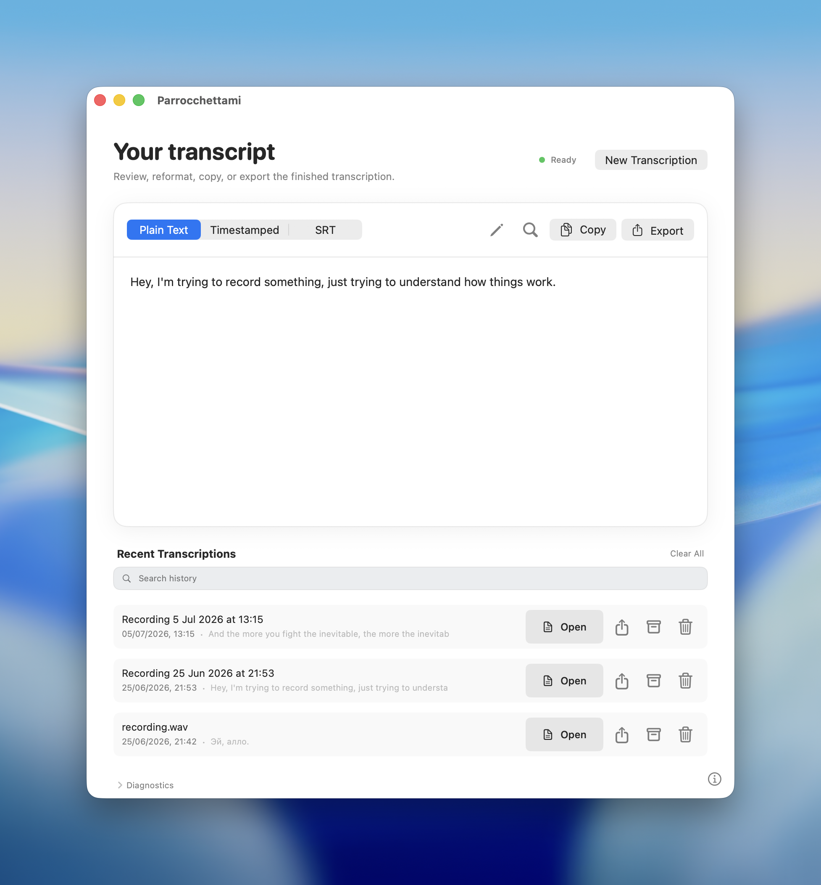
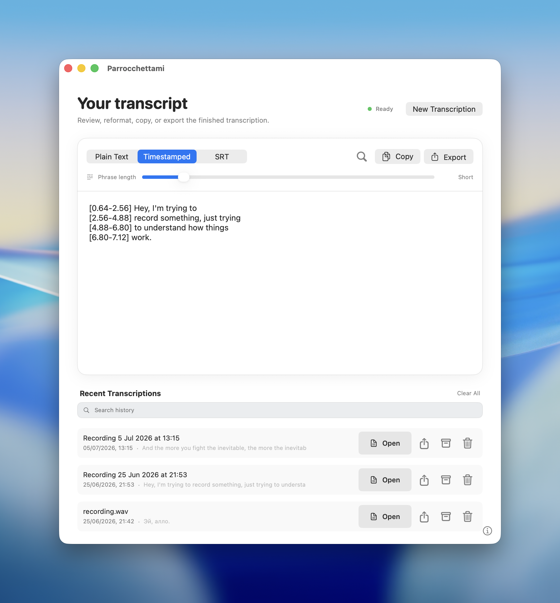
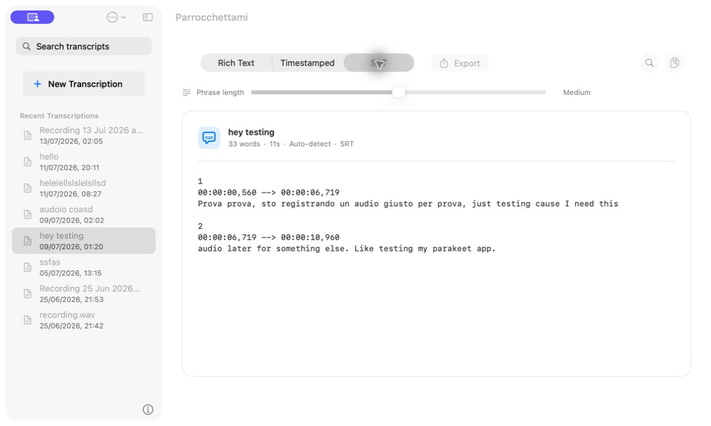

Parrocchettami
Trascrizione audio offline veloce e privata.
Per Mac Apple Silicon con macOS 14+. Nessun account, nessun upload.

Gira localmente
Gli audio non vengono mai caricati su servizi esterni.
Veloce e leggero
Trascrive audio in 25 lingue con NVIDIA Parakeet.
Export flessibile
Testo con timestamp oppure file SRT.
Audio
Testo
Parrocchettami trascrive i tuoi audio completamente offline, senza inviare nulla a servizi esterni.
Puoi esportare testo semplice, testo con timestamp o sottotitoli SRT.
Due modalità di funzionamento, senza fronzoli.
Trascrivi file audio
Registra in diretta

- WAV
- MP3
- M4A
- FLAC
- OGG
- AIFF
- AAC
Trascina un file nella app o selezionalo dalla finestra di sistema per ottenere la trascrizione.
Puoi registrare direttamente da qualsiasi microfono collegato al tuo Mac e ottenere automaticamente il testo trascritto alla fine.
Facile da usare. Completamente privata.
Dopo il download del modello AI, Parrocchettami non richiede alcuna connessione a internet per la massima privacy.
- ❌ Nessun account
- ❌ Nessun upload
- ❌ Nessun tracciamento
- ✅ Audio cancellati dopo la trascrizione




Parla la tua lingua.
Parrocchettami supporta 25 lingue europee. Scegli la lingua o lascia che l'app la rilevi automaticamente.
Installazione sicura:
Parrocchettami richiede macOS 14 o successivo e un Mac Apple Silicon.
Quando provi ad aprire l'app, macOS potrebbe bloccarti dicendo che "Apple non ha potuto verificare questa app". Vuol dire che non è sicura?
No: questo avviso riguarda la notarizzazione. Apple richiede che gli sviluppatori verifichino le proprie app, ma per farlo devono pagare 100 euro all'anno per l'Apple Developer Program.
Parrocchettami è sicura e open source: il codice si può controllare e si può fare una build direttamente dal sorgente.
Istruzioni per installare Parrocchettami
Scarica il DMG, copia l'app, poi autorizza il primo avvio.
- Apri il DMG Trascina Parrocchettami nella cartella Applicazioni.
- Prova ad aprire l'app Se macOS mostra l'avviso di verifica, chiudi il messaggio.
- Vai in Privacy e Sicurezza Apri Impostazioni di Sistema e cerca la sezione dedicata all'app bloccata.
- Scegli Apri comunque Conferma: dal secondo avvio l'app si apre normalmente.
Ti è apparso questo avviso?


Domande frequenti
Le risposte pratiche prima di scaricare o installare l'app.
Perché macOS dice che Apple non può verificare l'app?
Succede perché Parrocchettami non è notarizzata da Apple, sistema per cui serve un abbonamento al programma sviluppatori di Apple. Siccome Parrocchettami è completamente gratuita, non posso sostenere la spesa del programma sviluppatori, altro motivo per cui non può al momento essere pubblicata una app mobile.
Se vuoi aiutarmi, puoi farmi una donazione, condividere la app con altre persone o seguirmi sui social per supportarmi. Quando avrò la possibilità, attiverò il controllo di Apple per la app.
Parrocchettami funziona senza internet?
Sì. Dopo il download del modello AI, la trascrizione gira localmente sul Mac. Gli audio non vengono caricati su servizi esterni e dopo la trascrizione vengono cancellati.
Quanto spazio richiede?
Il modello AI occupa circa 707 MB. Il binario parakeet-cli pesa circa 3 MB; considera quindi poco meno di 1 GB di spazio libero per stare comodo.
Ci saranno versioni per Windows, Linux, iOS o Android?
Al momento non sono previste. Il codice però è open source, quindi chi vuole può studiarlo, adattarlo o proporre porting per altre piattaforme. Se avrò le risorse per pubblicare la app su iOS, la pubblicherò.
Che differenza c'è rispetto a Whisper?
Whisper è un modello AI per la trascrizione pubblicato da OpenAI: a differenza di NVIDIA Parakeet è più pesante e richiede più risorse, soprattutto per lingue diverse dall'inglese. Ad oggi ritengo che Parakeet sia il modello più adatto.
Quali Mac sono supportati?
Parrocchettami supporta macOS 14 o successivo su Mac Apple Silicon, quindi con il chip M1 o successivi.
Open source, licenze e credits.
Parrocchettami è software libero rilasciato sotto GPL-3.0-or-later: puoi leggere il codice, studiarlo, modificarlo e ricompilarlo dal sorgente.
parakeet.cpp
Repository upstreamNVIDIA Parakeet TDT
Scheda modelloComponenti terze
Credits completiTrascrivi audio offline, sul tuo Mac.
Scarica Parrocchettami o controlla il codice sorgente su GitHub.